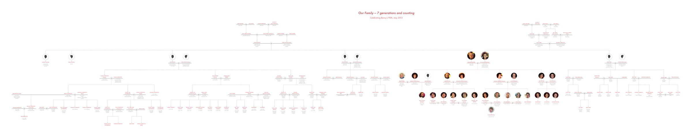

A working tree / Relationships with evidence
The family,
branch by branch.
These diagrams show the current research, not a fully proved pedigree. Select a branch, then open any person’s profile for the sources and qualifications.
The Milstein household
The three younger children are documented on Doba’s passport. Earlier parentage and Arke’s place in the family come from testimony.
Read the relationships and their evidence
- Yisroel Milstein / Zisel: Spouses in Minnie’s account (family testimony)
- Yisroel Milstein / Leibish Milstein: Father and son in Minnie’s account (family testimony)
- Leibish Milstein / Chaya Appelbaum: Spouses in Minnie’s account (family testimony)
- Leibish Milstein / Moshe Milstein: Father and son (family testimony)
- Leibish Milstein / Nutke Milstein: Father and son (family testimony)
- Leibish Milstein / Minnie Spitalnik: Father and daughter (family testimony)
- Moshe Milstein / Doba Lederer: Marriage and children named by Ben (family testimony)
- Moshe Milstein / Aron Milstein: Father and eldest son; gravestone names father Moshe (family testimony)
- Doba Lederer / Riva Gilinsky: Mother and accompanying child in passport (documented relationship)
- Doba Lederer / Ben Milstein: Mother and accompanying child in passport (documented relationship)
- Doba Lederer / Philip Milstein: Mother and accompanying child in passport (documented relationship)
The Lederer branch
Aron and Finkel are entries in the older tree. The proposed Binyomin/Yosefa household combines oral history and testimony records.
Read the relationships and their evidence
- Aron Lederer / Finkel: Shown as parents in Ethan’s older tree; unverified (inferred / unresolved)
- Aron Lederer / Doba Lederer: Father–daughter entry in Ethan’s tree, not independently verified (inferred / unresolved)
- Doba Lederer / Binyomin Lederer: Siblings: Hela’s father was Doba’s brother (family testimony)
- Binyomin Lederer / Yosefa Lederer: Candidate parental couple from testimonies (inferred / unresolved)
- Binyomin Lederer / Mendel Lederer: Brothers according to Hela (family testimony)
- Binyomin Lederer / Hela Lederer: Patronymic in burial register joins to Hela’s account (family testimony)
- Yosefa Lederer / Frida / Freida Lederer: Testimony explicitly names parents, but identity as Hela’s sister is inferred (documented relationship)
- Yosefa Lederer / Nechama? / Chuma?: Chuma’s form names parents; proposed Nechama identity is unresolved (inferred / unresolved)
The Alter connection
The older sibling link is strongly supported by converging oral and documentary evidence, but remains qualified.
Read the relationships and their evidence
- Yisroel Milstein / Zisel: Spouses, Minnie’s testimony (family testimony)
- Yisroel Milstein / Leibish Milstein: Father and son (family testimony)
- Yisroel Milstein / Chaya Dwora Alter: Testimony names parents Israel/Zissel; identification with Minnie’s grandparents is strong (inferred / unresolved)
- Leibish Milstein / Moshe Milstein: Father and son (family testimony)
- Moshe Milstein / Riva Gilinsky: Father and daughter, Ben’s interview (family testimony)
- Chaya Dwora Alter / Naftali Alter: Spouses named in Chaya’s testimony (documented relationship)
- Chaya Dwora Alter / Israel Alter: Mother and son: memoir name/place converges with the testimony (inferred / unresolved)
- Israel Alter / Pnina Alter: Parents of the filmmaker in his published interview (family testimony)
- Israel Alter / Naftali Alter: Father and son explicitly named in the published interview (family testimony)
Chaya Dwora Alter · proposed mother of Israel / Yisrael Alter and wife of Naftali Alter Chaya Dwora Alter, born MilshteinYisrael Alter’s Dorohusk memoir
Israel Alter + Pnina · parents of Naftali Alter, filmmaker Naftali Alter interviewed by Asaf NevoNaftali Alter — Israel Film Archive
If the older link holds: Israel and Moshe were first cousins; Israel and Riva first cousins once removed; filmmaker Naftali and Riva second cousins.
The Appelbaum branch
These earlier generations come from Minnie’s testimony. The two occurrences of Rochel and the village name Wulka need confirmation.
Read the relationships and their evidence
- Zalman Appelbaum / Chaya Appelbaum: Father and daughter in Minnie’s account (family testimony)
- Leibish Milstein / Chaya Appelbaum: Marriage in Minnie’s account (family testimony)
- Chaya Appelbaum / Moshe Milstein: Mother and son (family testimony)
- Chaya Appelbaum / Nutke Milstein: Mother and son (family testimony)
- Chaya Appelbaum / Minnie Spitalnik: Mother and daughter (family testimony)
Minnie names Chaya’s father as Zalman, Zalman’s parents approximately Leibu and Rochel, and tentatively his wife as Rochel too. Chaya’s siblings include Gittel, Ethel/Etel and a Nutke/Nuti who is separate from Moshe’s brother. Exact spouse and aunt-to-Glazer links remain unresolved.Minnie Spitalnik - 223:58–26:37
The Slot stepfamily
Doba and Isaac’s marriage is supported by the family accounts. The Annie household is a candidate, with unproved Nick/Leslie and Hayme/Hymie aliases.
Read the relationships and their evidence
- Doba Lederer / Isaac Slot: Remarriage in the family accounts (family testimony)
- Isaac Slot / Annie Slot: Annie notice names an Isaac; exact identity still conditional (inferred / unresolved)
- Annie Slot / Paul Slot: Notice names Paul; match to the remembered stepchild not fully proved (inferred / unresolved)
- Annie Slot / Nick Slot: Notice names Leslie; alias Nick from earlier tree (inferred / unresolved)
- Annie Slot / Hayme / Hymie Slot?: Notice names Hayme, reading provisional; earlier tree may duplicate Hymie/Helman (inferred / unresolved)
Mark Milstein’s 2013 family tree
Mark Milstein, Ben’s son, compiled Our Family — 7 generations and counting for Benny’s 90th birthday in May 2013. Mark Cohen supplied this copy. The wide-format chart follows the Milstein and Lederer family, the Gilinsky connections, and Lily Sher’s family, with descendants recorded as of 2013.Mark Milstein’s family tree, May 2013

The chart adds family dates such as Riva and Max’s marriage on 25 December 1938 in Johannesburg, Ben’s birth on 1 May 1923 and Philip’s birth on 4 August 1927. These remain attributed family-history entries. Its 2013 snapshot does not establish anyone’s present living status, and agreement with another family compilation is not necessarily independent confirmation.Mark Milstein’s family tree, May 2013